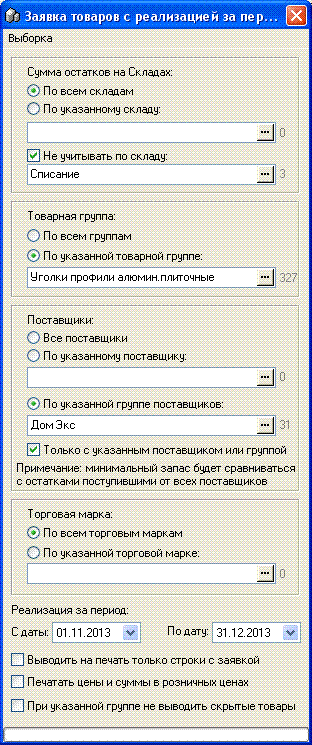
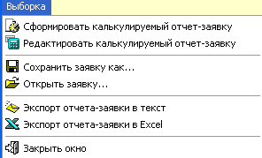
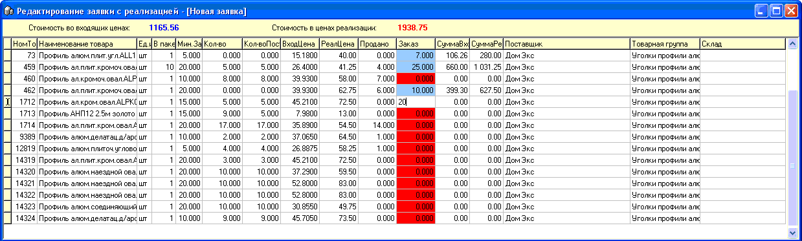
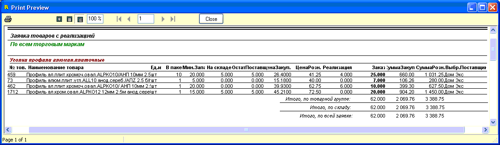

Данный отчет во многом похож на отчет "Заявка
товаров", однако предоставляет намного больший функционал и количество
критериев, в небольшой ущерб скорости формирования. Причиной снижения скорости
является дополнительное включение в отчете вывода реализации товаров за
указанный период, а также разделение общего остатка товара и остатка
указанного поставщика. Для правильной работы отчета в карточках товаров должно
быть проставлено количество минимального запаса товара (по умолчанию там стоит
0, подробнее смотрите раздел справки "Справочники/Товары").
Рассмотрим выбираемые параметры формирования отчета
подробнее.

Сумма остатков на складах - выберите интересующий
вас склад или все склады (в таком случае исключите из отбора остатки на складе
"Списание", как показано на примере-рисунке выше.
Товарная группа - укажите при
необходимости.
Поставщики - укажите по всем поставщикам, по
выбранному одному поставщику, или по группе поставщиков осуществлять отбор
данных. Учтите, что минимальный запас из карточки каждого товара будет
сравниваться с остатком суммарным по товару.
Торговая марка - выберите при
необходимости.
С даты/По дату - укажите требуемый диапазон дат
выборки.
Выводить на печать только строки с заявкой - если
установлен, то в итоговую печатную форму будут включаться только строки с
проставленным количеством заказа.
Печатать цены и суммы в розничных ценах - при
работе с поставщиками, обычно, опция снята.
При указанной группе не выводить скрытые товары -
выберите при необходимости.
После указания требуемых параметров выборки
нажмите в главном меню пункт "Сформировать калькулируемый
отчет-заявку".

На экран будет выведена форма редактирования
заявки товаров. Редактированию подлежит только столбец "Заказ". Вверху формы
сразу подсчитывается стоимость заказываемого товара, в последних
закупочных/розничных ценах, так что оператор сразу может сравнивать с суммой,
которую располагает магазин на закупку данных позиций.

После того как вы закончили набор, просто
закройте окно редактирования заказа и автоматически будт открыт отчет по всем
товарам или только с теми позициями, по которым был проставлен заказ
(если установлен флажек "Выводить на печать только строки с
заявкой"):

Если вы закрыли отчет и не хотите формировать его
заново, а затем снова проставлять заказ, выберите в главном меню
"Редактировать калькулируемый отчет-заявку" и можно снова продолжить
редактирование и/или перейти к предварительному просмотру и печати
отчета.
С той же целью в главном меню также есть
возможность сохранить и затем открыть заявку в указываемый файл/из файла.
Формат хранения данных *.xml.